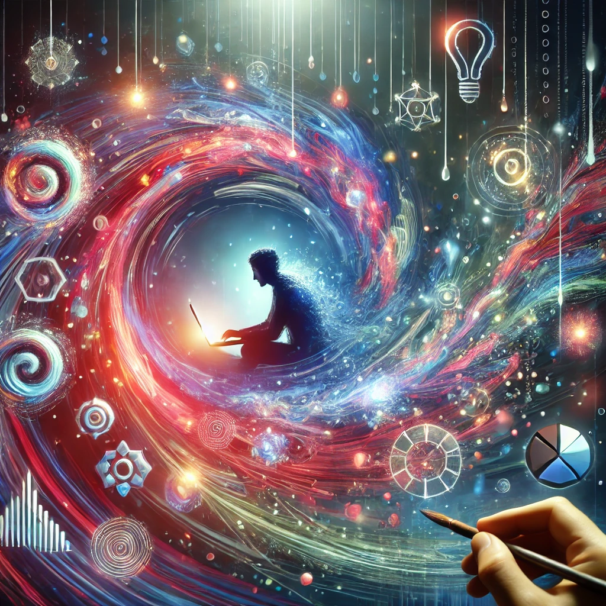

Le flow : cet état mental magique

Tu sais, cette sensation où tu es tellement pris dans un truc que t'en oublies l'heure, les notif, même la faim ? Ce moment où tout coule, où chaque action semble juste et fluide ? Eh bien, ça s'appelle l'état de flow, et je viens de réaliser que je suis accro à ça.
C’est quoi le flow ?
Le flow, c’est cet état mental magique où tu es à 100 % concentré, plongé dans une activité qui te dépasse un peu mais que tu te sens capable de maîtriser. Ça vient d’un équilibre parfait entre la difficulté de la tâche à accomplir et ta capacité à la réaliser.
Si c'est trop facile ? Tu t’ennuies. Trop dur ? Tu stresses. Mais quand c’est juste au bon niveau, ça vibre !
Tu te fixes un objectif clair, tu vois tes progrès en temps réel, et surtout, tu te perds dans l’instant. Plus rien d'autre n'existe que ce que tu fais. Pas de jugement, pas de pression extérieure, juste toi et ton truc.
Comment j’ai capté que j’étais drogué à ça ?
C’est en me posant des questions pendant une énième insomnie. : "Qu’est-ce qui me rend heureux ?" , "Quel est ma zone de génie ?" Et en repensant à ces moments où je kiff vraiment; quand j’écris sur des concepts que je viens de comprendre, où je dessine dans des styles nouveaux qui mélangent technique et originalité, où je code des features essentielles pour mon site comme un espace commentaire ou le SEO, en fait c'est quand j'apprends un nouveau truc, quand il y'a un enjeu et que je vis un moment de qualité avec moi même.
En fait, ce n’était jamais vraiment l’objectif final qui me motivait, mais cet état de vibration intense pendant que je créais. Toute ma vie, je cours après ça :
- En 2010, je faisais des déco et des fly de concert
- En 2016, j’ai créé une marque de sapes.
- En 2018, j’organisais des événements.
- Pendant le confinement, j’ai appris à coder et programmer
- Aujourd’hui, je lance encore une nouvelle entreprise.
Et je m'arrêt ici avec les domaines dans lequel j'ai accordé du temps car en vrai y'en à le triple. Je me rends compte que ces projets, qui ont chacun durée des années, ont plus ou moins fonctionné voir pas dutou car je me fous du résultat. Je n'ai même pas envie de les faire ces projets au fond, ce qui me fait bander, c'est juste de les créer, aprés next.
Et pourquoi ? Parce que à chaque fois, je me retrouve dans cet état de flow où je suis à fond, où j’apprends, je teste, je crée, je me dépasse. C’est clairement une addiction chez moi. Et c’est aussi pour ça que je change d’activité trois fois par an : je cours après la nouveauté, le challenge, l’excitation de découvrir et de réussir quelque chose que je pensais pas être capable de faire.
Et tu es peut-être pareil ? Toi aussi tu t'es dit que tu étais une merde de tout foirer, à être partout à la fois. Voir tes potes devenir expert dans leur domaine et toi devenir un touche à tout. Bah désolé si je te l'apprends aujourd'hui, t'es un camé du flow 😂
Une recette pour le flow
Alors, si t’as envie de ressentir ou le redécouvrir, voici ma recette* du flow, version cuisine. Parce que je suis chef de cuisine maintenant et le flow, ça se prépare comme un bon plat !
Ingrédients :
- Une activité stimulante : Pas trop facile, pas trop dure. Un truc qui te pousse juste assez hors de ta zone de confort.
- Un objectif clair : Savoir ce que tu veux accomplir, même si c’est pas parfait.
- Un espace sans distraction : Couper ton téléphone, créer une bulle où tu peux te concentrer à fond.
- Du feedback immédiat : Observer tes résultats en direct pour ajuster et progresser.
- Une dose de passion : C’est ce qui lie tous les ingrédients ensemble.
La préparation :
Préchauffe ton esprit : Trouve un sujet ou une activité qui t’exalte, mais qui te met un peu au défi.
Organise ton plan de travail : Fixe-toi un but clair et sors tout ce dont tu as besoin pour éviter les interruptions.
Ajoute une pincée de difficulté : Pas trop, juste assez pour te challenger.
Mélange avec concentration : Plonge-toi dans l’activité sans penser à autre chose.
Laisse mijoter : Ne force pas, laisse-toi emporter par le processus.
Déguste avec satisfaction : Apprécie le résultat, mais savoure surtout le chemin parcouru.
Pourquoi c’est important ?
Le flow, c’est pas juste un kiff perso. C’est ce qui nous pousse à grandir, à dépasser nos limites, à créer des trucs qu’on pensait impossibles. Et en plus, ça nourrit une énergie positive. Quand tu vis dans le flow, tu deviens plus heureux, plus résilient, et t’inspires les autres.
Moi, je sais maintenant que ma quête de nouveauté et de défis n’est pas un défaut, mais une force. Par exemple avant j'aurais gardé tout ça pour moi en me disant, si je le partage ( à d'autre que des amis ) on vas me prendre pour un con, aujourd'hui j'en ai plus rien à f**t*e, car écrire ça ici me met en etat de flow.
Et toi, c’est quoi ton état de flow ?
* Je pensais que l'idée de mettre une recette du flow était de moi mais en écrivant cet article j'écoutais David Lefrançois et je pense que inconsciemment ça m'as inspiré. Alors Merci.